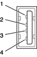

The USB ports use USB Type A connectors, which have four pins each. Two of the pins are used for power and two for data. Figure 3-1 shows the connector and Table 3-1 shows the signals and pin assignments.
Figure 3-1 USB connector
| Pin | Signal name | Description |
| 1 | VCC | +5 VDC |
| 2 | D– | Data – |
| 3 | D+ | Data + |
| 4 | GND | Ground |
The Power Mac G4 provides power for the USB ports at 5 V and up to 500 mA on each port. The ports share the same power supply; a short circuit on one will disable both ports until the short has been removed.
The USB ports support both low-speed and high-speed data transfers, at 1.5 Mbits per second and 12 Mbits per second, respectively. High-speed operation requires the use of shielded cables.
The Macintosh system software supports all four data transfer types defined in the USB specification.